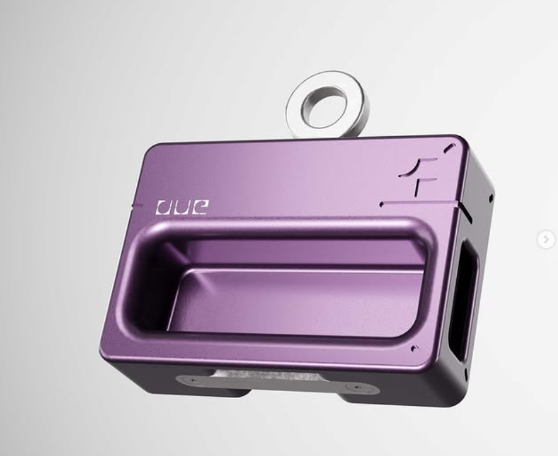

Forma.training
A dynamometer for climbers with a research-backed training program attached. You pull, it measures force over time, and the app turns that curve into something you can act on this session. The trace at the top of this page came off it.
Climbers train at a crag with no signal, so the app is offline-first — PowerSync over Supabase, a full session syncing hours later without the user thinking about it. I designed the UX, the architecture, and the force-data compression; Claude and Cursor wrote firmware, UI and backend under my direction.
The company has stopped operating. The app still has ~200 users and 30 daily actives, and the repo is public — including the CLAUDE.md and .claude/ config that shaped how the agents worked on it.



- Stack
- Flutter · Supabase · PowerSync · Figma · BLE · ESP32-S3 (ESP-IDF + Arduino) · load cell · custom PCB & enclosure
- AI in the loop
- Claude + Cursor across firmware, UI and backend
- Elapsed
- 14 days to working prototype · 3 months to both app stores
- Role
- Solo — hardware, firmware, app, design. My company.